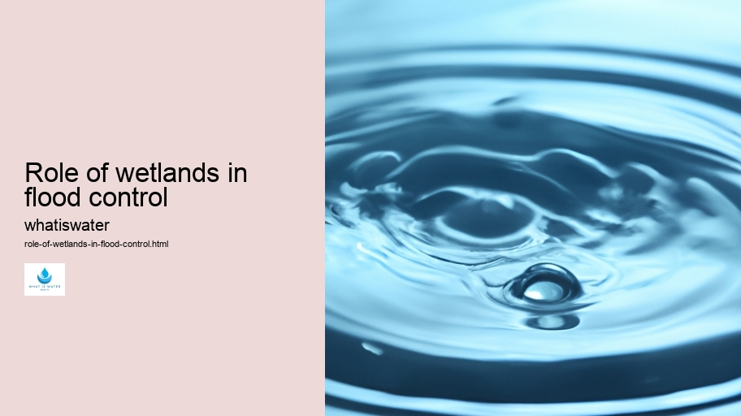

Hydrological Cycle
Hydrological Cycle
Evaporation and transpiration
Condensation and cloud formation
Precipitation and rain patterns
Surface runoff and river systems
Groundwater flow and aquifers
Snowmelt and glacial processes
Water storage in oceans lakes and reservoirs
Soil moisture and infiltration
Water balance and budgeting
Human impact on the hydrological cycle
Marine Ecosystems
Marine Ecosystems
Coral reefs and their biodiversity
Mangrove forests as coastal protectors
Ocean currents and climate regulation
Deepsea habitats and extremophiles
Intertidal zones and estuarine ecosystems
Marine food webs and trophic levels
Freshwater Ecosystems
Freshwater Ecosystems
Conservation efforts for marine species
Marine biogeochemical cycles
Impact of global warming on oceans
Water Resource Management
Water Resource Management
Rivers streams and creeks ecosystems
Lakes ponds wetlands habitats
Biodiversity in freshwater environments
Aquatic plants role in oxygenation
Freshwater fish species diversity
Invasive species impact on freshwater systems
Pollution threats to freshwater sources
Conservation strategies for freshwater biomes
Role of wetlands in flood control
Importance of riparian buffers
Cultural Significance of Water
Cultural Significance of Water
Sustainable water use practices
Desalination technologies for fresh water supply
Wastewater treatment processes
Rainwater harvesting techniques
Management of water during drought conditions
Transboundary water resource politics
Infrastructure for water distribution
Agricultural irrigation efficiency
Urban water demand management
Impact of climate change on water resources
About Us
Contact Us

Role of wetlands in flood control
Water Law and Policy
Wetlands, the Earth's kidneys, play an indispensable role in flood management.
Role of wetlands in flood control - Hydrology
Water Sports and Recreation
Hydroponics
Groundwater
Drinking Water
Aquifers
Water Law and Policy
Water Law and Policy
Yet, ironically, they are often undervalued and overlooked in engineering-centric approaches to flood control.
Role of wetlands in flood control - Water Law and Policy
Thermal Pollution
Sustainable Water Use
Water in Culture and Religion
Water Sports and Recreation
Hydroponics
These natural sponges absorb vast amounts of rainfall, reducing the velocity of water runoff and providing a buffer against flooding.
Let's consider the hydrological dynamics of wetlands. During heavy rainfalls or snowmelts, wetlands act like a sponge by absorbing excess water. The dense vegetation slows down the flow of water, allowing sediments to settle and decreasing erosion.
Role of wetlands in flood control - Water in Culture and Religion
Hydrology
Thermal Pollution
Sustainable Water Use
Consequently, when waters reach downstream areas—where towns and cities might be located—they arrive with a significantly reduced force, thereby diminishing potential damage.
Moreover, wetlands gradually release stored waters back into waterways or groundwater systems.
Sustainable Water Use
This controlled release helps maintain river levels during dry periods and replenishes aquifers that many communities rely on for drinking water. Without these natural buffers, periods of drought would be more acute and devastating.
Yet despite their vital role in flood mitigation, wetlands continue to face threats from human activities such as land development for agriculture or urban expansion which results in their drainage or filling in. This not only diminishes their capacity to control floods but also affects biodiversity and disrupts ecosystems services that are essential for our well-being.
Protecting existing wetlands and restoring degraded ones is thus crucial for effective flood management strategies. Conservation policies need to recognize the value of these ecosystems and integrate them into holistic water management plans that combine grey infrastructure (like dams and levees) with green infrastructure (such as wetlands).
In conclusion, recognizing the critical function of wetlands in managing floods is imperative for sustainable environmental stewardship.
Role of wetlands in flood control - Water in Culture and Religion
Their ability to store large volumes of water during storm events protects downstream communities from flooding while supporting biodiversity and ecological resilience. As climate change heightens weather extremes including severe storms and prolonged droughts—the need for preserving these natural defenses becomes not just beneficial but essential.
Thermal Pollution
Hydrological Cycle
Check our other pages :
Role of wetlands in flood control
Rainwater harvesting techniques
Ocean currents and climate regulation
Frequently Asked Questions
How do wetlands help in controlling floods?
Wetlands act as natural sponges, absorbing and storing excess rainfall and surface water. Their soil and vegetation slow down floodwaters, reducing the speed and peak flow of runoff into rivers and streams. This process helps to mitigate the severity of floods downstream.
What characteristics of wetlands contribute to their effectiveness in flood control?
The unique characteristics that contribute to wetlands effectiveness in flood control include their flat topography, high water storage capacity due to porous soil and vegetation, and the ability for plants to slow down water flow. Additionally, wetland soils are often highly organic, which enhances their ability to absorb water.
Can wetlands still provide flood control benefits when they are partially developed or altered?
Although altered or partially developed wetlands can still provide some degree of flood control, their efficacy is usually reduced compared to intact natural wetlands. Urbanization and infrastructure development can decrease the area available for water absorption, reduce plant diversity, disrupt hydrological patterns, and compact soil – all factors that diminish a wetlands ability to manage floods effectively. Conservation efforts aim to preserve or restore these crucial areas.
Are there any specific types of floods that wetlands are particularly good at controlling?
Wetlands are especially effective at mitigating smaller, more frequent floods by absorbing excess precipitation before it becomes runoff. They can also play a significant role during larger flooding events by providing additional storage for floodwater; however, for extreme events like major riverine floods or flash floods caused by intense rainfall over short periods, the capacity of a single existing wetland may be exceeded.